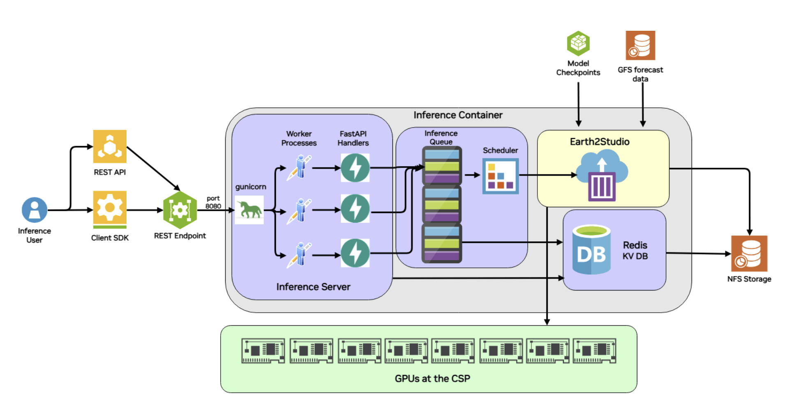

From Scripts to Endpoints: Bridging the Gap in Cloud-Native Inference
For a developer, the journey from working Python scripts to a production-ready cloud solution is often paved with "infrastructure tax." For instance, as a developer you’ve cracked the problem of applying AI models for your weather related application using powerful libraries like Earth2Studio.
But the road to a scalable cloud native pipeline that could serve many users is blocked by a familiar set of challenges:
- The "Plumbing" Problem: Writing boilerplate code for asynchronous job queues, status management and error handling.
- State Management: Tracking long-running inference tasks across distributed systems without losing progress or results.
- Data Management: Converting complex Python objects into validated JSON schemas, efficiently zipping, storing, and serving large output files (like Zarr or NetCDF) via HTTP.
{kind=link}
Serving inference with Earth2Studio
In the latest release of Earth2Studio, we have introduced a templatized workflow designed to eliminate this "middleman" work. Leveraging the concept of built-in reference recipes in Earth2Studio, this templatized workflow allows you to transform any Earth2Studio recipe into a scalable REST API by following a three-step pattern:
1. Implement the Workflow Logic
You subclass the Workflow class and implement a run() method within it. The heavy lifting—managing whether a job is "queued" or "running"—is automatically handled by the system. You simply focus on your logic, using update_execution_data() to send progress heartbeats back to the API.
For even tighter integration with Earth2Studio and fewer manual steps, you can use Earth2Workflow. This is a Pythonic workflow that can be naturally run also outside the server environments and is automatically assigned an API schema.
class MyForecastWorkflow(Earth2Workflow):
def __init__(self):
self.model = ... # initialize your model
self.data = ... #initialize your data source
def __call__(
self,
io: IOBackend,
nsteps: int = 20,
model_type: Literal["dlwp", "fcn"] = "fcn"
):
# workflow logic goes here
2. Define Your Data Structure with Pydantic
If you’re using Earth2Workflow, you can skip this step - the parameters will be automatically created for your model!
If you use the lower-level Workflow, instead of manually parsing request bodies, you define a WorkflowParameters class. Using Pydantic, your Python types (strings, ints, lists) are automatically mapped to a JSON API. This provides instant validation and self-documenting parameters for your endpoint. The parameters below correspond to the parameters that would be automatically created for the Earth2Workflow example above:
class MyForecastParameters(WorkflowParameters):
nsteps: int = Field(default=20, ge=1, le=100, description="Forecast steps")
model_type: str = Field(default="dlwp", description="Model type")
3. Auto-Discovery & Deployment
There’s no need to manually register routes. By using the @workflow_registry.register decorator and setting a WORKFLOW_DIR environment variable, the system auto-discovers your scripts and stands up endpoints immediately.
This architecture separates the application and inference logic from the API infrastructure. While the system manages Redis state, file zipping, and request queuing, you spend your time focused on refining models.

{kind=link}
Deploying a Forecasting API
In the Earth2Studio documentation, there is an example that demonstrates the Earth2Studio REST API using the Deterministic Forecast recipe. This example transforms python inference scripts to a dynamic, trackable endpoint service by following the same "Contract-Logic-Discovery" pattern discussed above. Meanwhile another example shows how Earth2Workflow automates much of this process, requiring only a Pythonic workflow.
1. The Parameter Contract
Instead of hardcoding simulation variables, the workflow uses a DeterministicWorkflowParameters class. This defines the exact inputs the REST API will accept, such as:
- Forecast Details:
forecast_times(ISO strings) andnsteps(validated between 1 and 100). - Model Selection: A string parameter to toggle between models like
dlwporfcn. - Visualization: Boolean flags to trigger plot generation for specific variables like
t2m(2-meter temperature).
2. The Implementation Logic
The run() method acts as the engine, wrapping Earth2Studio’s computational tools in a way that communicates with the cloud infrastructure:
- Initialization: It loads the requested AI model package (e.g., DLWP) and sets up the data source, such as GFS (Global Forecast System).
- Progress Heartbeats: At key milestones—like loading components or starting the 6-hour forecast steps—it calls
self.update_execution_data(). This allows an external developer to seecurrent_step: 4, total_steps: 6via the API status endpoint. - Output Management: It uses a Zarr backend to save results to a specific directory provided by
get_output_path(), ensuring the system knows exactly where to find the data to zip and serve it later.
3. API Accessibility
Once deployed, this workflow is no longer just a script on a researcher's laptop; it becomes a set of predictable endpoints:
- Submission: A POST to
/v1/infer/deterministic_workflowstarts the job. - Monitoring: A GET to the status endpoint returns the current state (e.g., running) and progress metadata.
- Retrieval: Once complete, the results can be downloaded as a full zip or streamed directly into an analysis tool like xarray via the Zarr URL.
Getting started
If you are a developer or scientist or AI researcher, Earth2Studio is a powerful library to get users up and running very quickly by lowering barriers to entry so they can explore, validate and experiment with AI models for weather and climate. The following resources will help you in getting started: